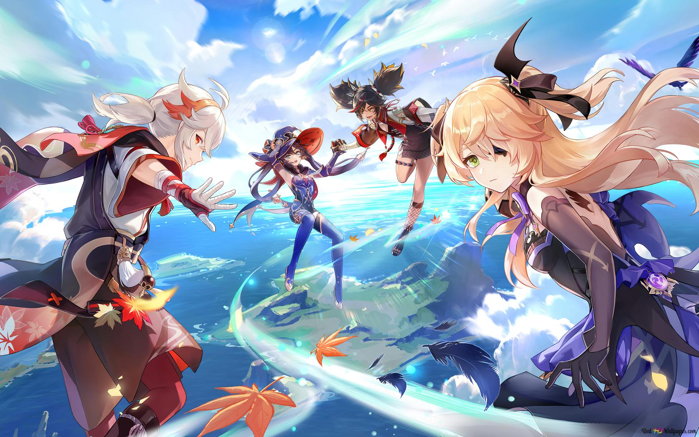

Genshin Impact
Genshin Impact - приключенческая ролевая игра с открытым миром. Путешественник исследует мир Тейват. На этом континете существует семь королевств, которые отличаются друг от друга. По пути встретите много различных героев, которые станут вашими друзьями и союзниками. Они помогут вам найти своег близкого человека, которого вы потеряли при путешествии по мирам.
В этом мире существует магия, которая проявляется при получении "Глаза Бога". Этот амулет хранит в себе желания и амбиции хозяина. Не все жители Тейвата имеют "Глаз Бога", только избранные или призванные божества "Адепты" с "Селестии".
В мире существует семь богов, их называют Архонтами. Каждый из них создал свое королевство и поддерживают баланс в мире.